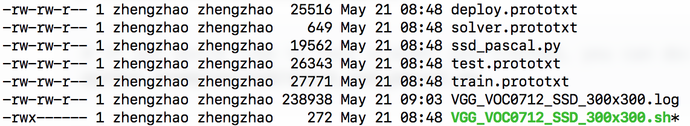

painterdrown Blog - painterdrown CV
SSD - Notes & Practice
⏰ 2018-05-21 08:22:22
👨🏻💻 painterdrown
SSD - Notes & Practice1. 装 caffe2. 训练 & 评估2.1 Train & Evaluate(顺便)2.2 Evaluate2.3 Test Using a Webcam2.4 Test2.5 Train on Other Dataset3. BTW3.1 Linux 进程状态3.2 tmux 常用操作3.3 在 macOS Terminal 通过 ssh 显示服务器的图形化界面4. Resources
1. 装 caffe
实验室的服务器（Ubuntu 16.04）已经装好了 CUDA, cuDNN, OpenCV 的环境，所以现在只需要编译一下 Caffe 就可以跑。
官方安装教程：https://github.com/weiliu89/caffe/tree/ssd#installation
跟着这个教程走完 Installation 和 Preparation。
我的 Makefile.config & Makefile
PS: 由于在编译的时候遇到了一个关于 hdf5 和 undefined reference to「boost::re_detail::raise_runtime_error(std::runtime_error const&)」 的错误，需要修改下 Makefile:
# 原来版本：LIBRARIES += glog gflags protobuf boost_system boost_filesystem boost_regex m hdf5_hl hdf5LIBRARIES += glog gflags protobuf boost_system boost_filesystem m hdf5_serial_hl hdf5_serial boost_thread stdc++ boost_regex我这边 make py 的结果：

2. 训练 & 评估
2.1 Train & Evaluate(顺便)
# time: 08:48python examples/ssd/ssd_pascal.py开始跑：


以及 GPU 的状态如下（zhengzhao 是我）：

刚开始用 tmux，不小心关掉了窗口，看不到输出，只能等它跑完了...这是 ps 查到的进程状态（先是通过 ps）：
# 找到相应进程的 ID（其实已经包含线程状态了）ps aux...# 查看进程的状态ps <pid> PID TTY STAT TIME COMMAND31938 ? Sl 385:59 ./build/tools/caffe train --solver=models/VGGNet/VOC0712/SSD_300x300/solver.prototxt --weights=models/VGGNet/VGG_ILSVRC_16_layers_fc_reduced.caffemodel --gpu 0,1,2,3我观察了一下，跑 200 次迭代需要 123 秒。这次训练需要 120k 次迭代，大概要跑 20 个小时......漫长等待之后，可以在 $HOME/data/VOCdevkit/results/VOC2007/SSD_300x300/ 看到运行的结果：

训练出来的模型在 $CAFFE_ROOT/models/VGGNet/VOC0712/SSD_300x300/:

还有这次训练的其它 job file, log file, python script 在 $CAFFE_ROOT/jobs/VGGNet/VOC0712/SSD_300x300/:

2.2 Evaluate
It should reach 77.* mAP at 120k iterations.
官方说能达到 77 的 mAP，现在来测试一下。
python examples/ssd/score_ssd_pascal.py输出如下：

可以看到是有 76.99 的 mAP，没有 77 有点小失望。
2.3 Test Using a Webcam
这一步就算了，我这里没有网络摄像头。
2.4 Test
Check out examples/ssd_detect.ipynb or examples/ssd/ssd_detect.cpp on how to detect objects using a SSD model. Check out examples/ssd/plot_detections.py on how to plot detection results output by ssd_detect.cpp.
这里是在说有 Jupyter 文档说明如何用 SSD 来做目标检测以及如何圈出检测结果。我把 Jupyter 转成了 HTML：examples/ssd_detect.ipynb。
附上 examples/ssd/ssd_detect.cpp 和 examples/ssd/plot_detections.py。
2.5 Train on Other Dataset
To train on other dataset, please refer to data/OTHERDATASET for more details. We currently add support for COCO and ILSVRC2016. We recommend using examples/ssd.ipynb to check whether the new dataset is prepared correctly.
我尝试着跑 examples/ssd_detect.ipynb 里面的代码，但是人家是 IPython 解释器跑的，所以这一句：%matplotlib inline 不能在 CPython 里面运行（我也不了解怎么把这句翻译到 CPython 里面）。所以也显示不了最终的效果图，但是代码是可以跑起来的，这就够啦嘿嘿。代码的思路：
- 设置 caffe 的基本配置（CAFFE_ROOT）
- 引入训练好到模型
models/VGGNet/VOC0712/SSD_300x300/VGG_VOC0712_SSD_300x300_iter_120000.caffemodel - 加载测试图片，喂到模型里面，得到 classsification score 和 bounding box
3. BTW
3.1 Linux 进程状态
D不可中断 Uninterruptible sleep(usually IO)R正在运行，或在队列中的进程S处于休眠状态T停止或被追踪Z僵尸进程W进入内存交换（从内核 2.6 开始无效）X死掉的进程
进程状态的修饰：
<高优先级N低优先级L有些页被锁进内存s包含子进程+位于后台的进程组l多线程，克隆线程
3.2 tmux 常用操作
tmux new -s <name>新建会话并取个名字。tmux ls查看所有会话。tmux a -t <name>进入某个会话。tmux kill-session -t <name>终止某个会话。Ctrl + B + D退出某个会话（仍在后台）。Ctrl + B + S切换到另外的会话。
3.3 在 macOS Terminal 通过 ssh 显示服务器的图形化界面
https://uisapp2.iu.edu/confluence-prd/pages/viewpage.action?pageId=280461906
- mac 本地先安装 XQuartz
- ssh 连接的时候带上
-X参数：ssh user@host -X - 之后，在 ssh 里面进行图形化相关的操作，就会在 mac 本地显示出来